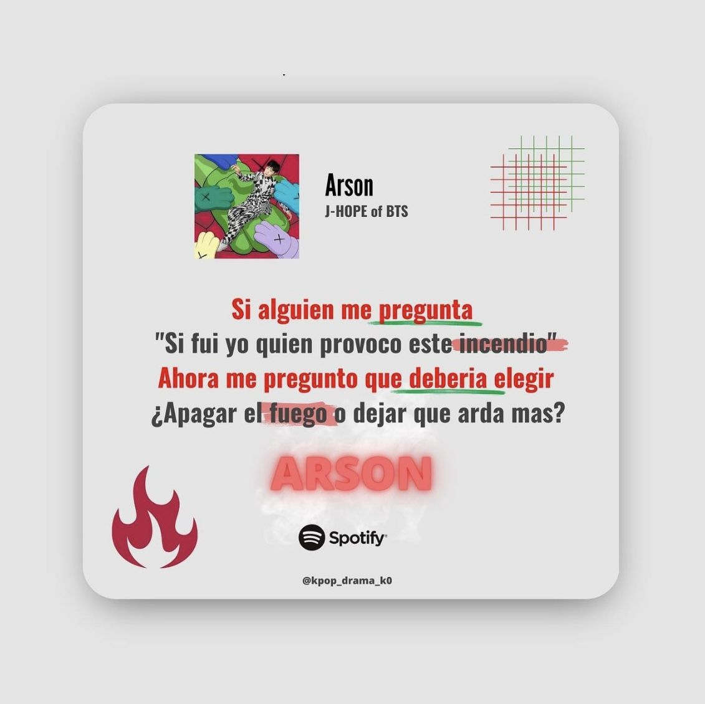
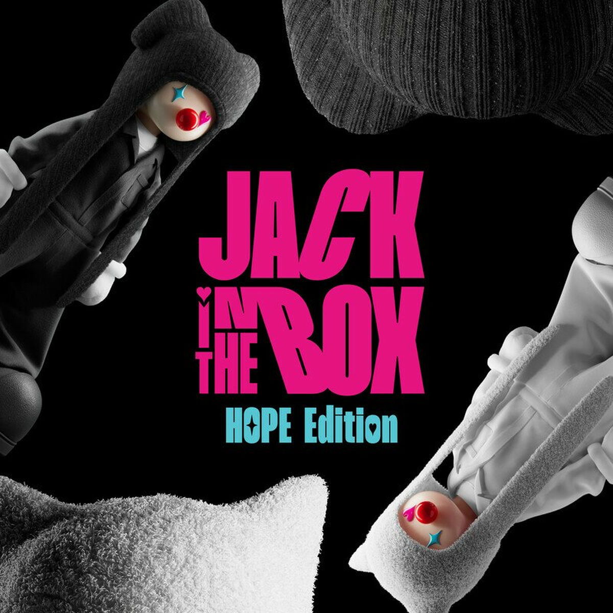

Jung Hoseok
Jung Hoseok
¿Quién es?
Jung Hoseok, cuyo nombre artístico es J-Hope, nació el 18 de febrero de 1994 en Gwangju. Actualmente tiene 30 años y es conocido por ser uno de los bailarines principales y raperos del grupo. Su personalidad brillante, optimista y energética lo ha convertido en una figura muy querida tanto dentro como fuera del escenario.
Su unión a BTS
Fue seleccionado por su talento en el baile, ya que antes de BTS formaba parte de un grupo de danza. Al ingresar a Big Hit Entertainment, comenzó a entrenar también en rap y canto, desarrollando así una versatilidad artística que lo distingue.

Trabajo solista
Entre sus canciones destacan “Daydream” y “MORE”. Su estilo abarca desde hip-hop hasta sonidos experimentales, incorporando funk, old school y elementos alternativos, mostrando tanto su lado luminoso como su faceta más oscura.
¡Escucha su música!
Descubre una nueva faceta artística en Jack in the Box, donde rompe con su imagen tradicional y explora sonidos más profundos.
Conoce su música